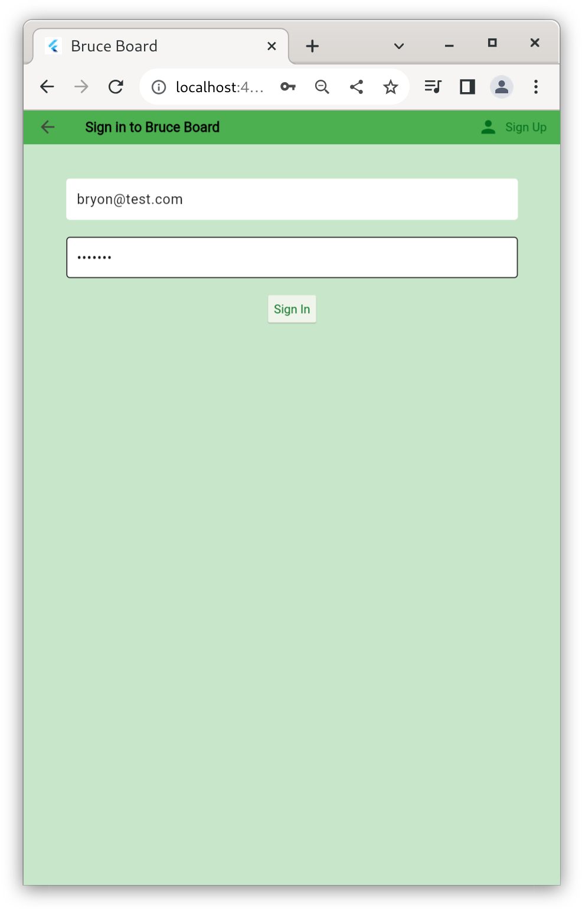
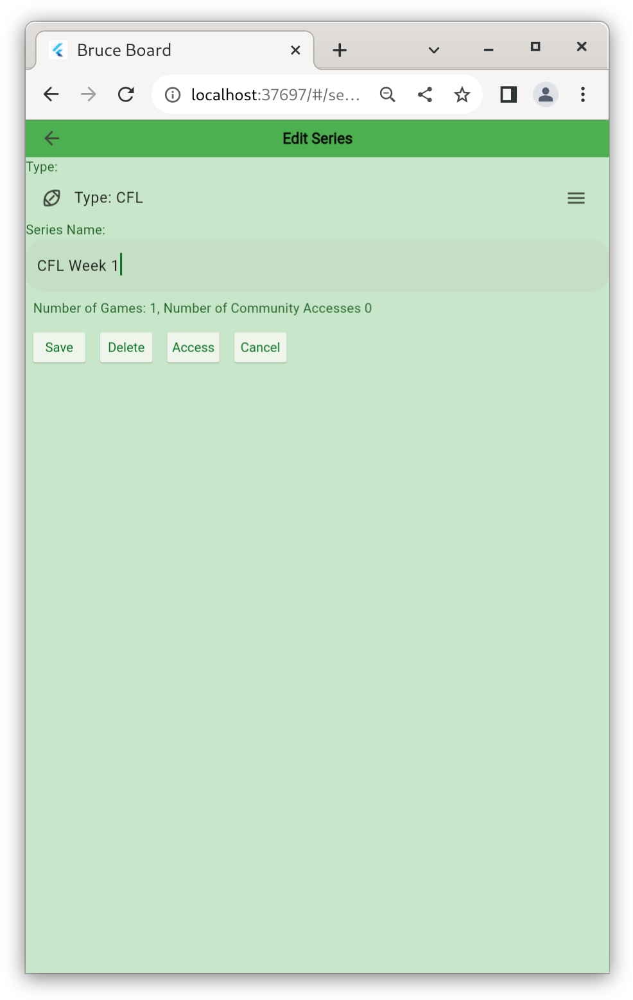
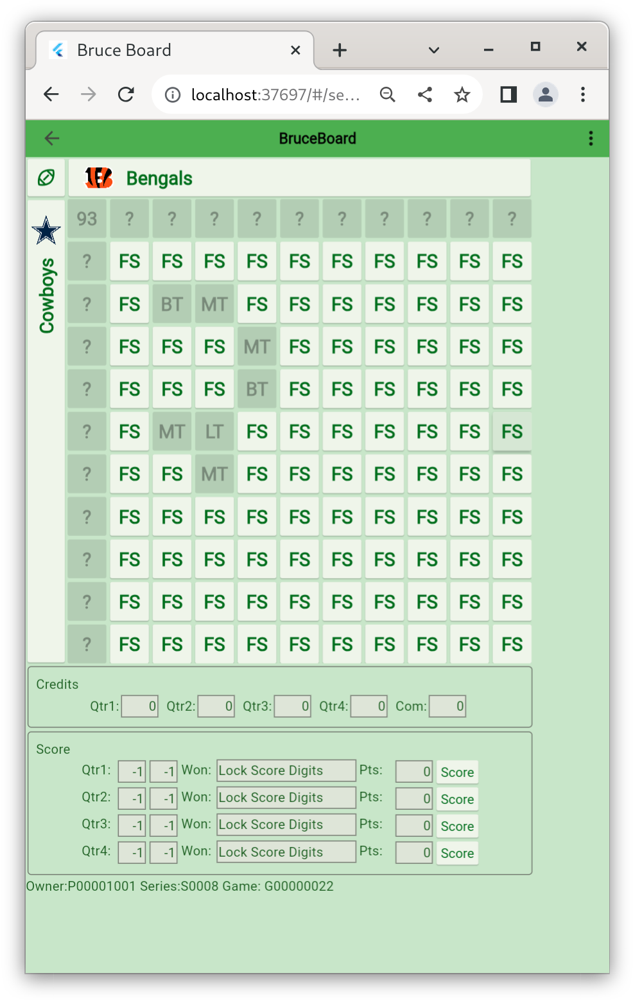
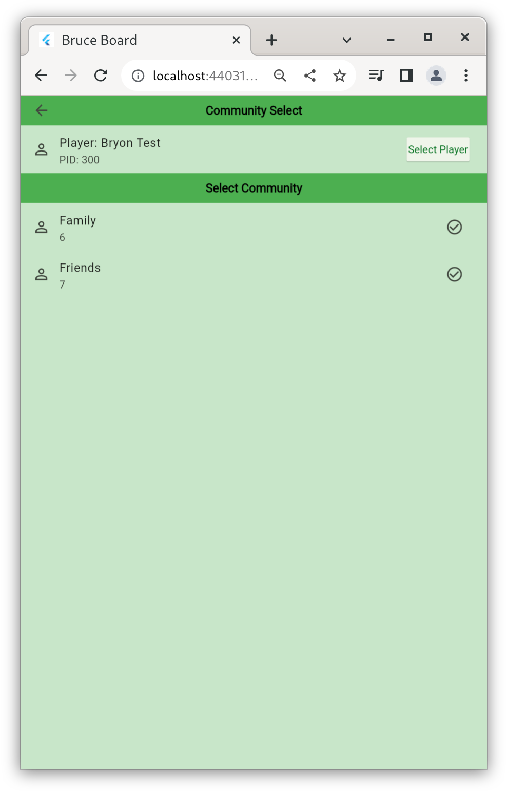

Version: 1.0.01
BruceBoard is an application used to Create, Maintain and Play standard 10x10 Football Pools. The key functionality includes the following:
Note: A Player can be given access to their own community to enable them to play along.
The following are key data model elements used within the BruceBoard Application.
Firebase is a service provided by google and provides Authentication and Data services.
The Home pages is the launching point for the application. From here Players can:

BruceBoard uses Firebase to manage Application Authentication. Firebase Authentication contains key information such as:
This data (except Password) is available to the Addministration Account to manage users (delete, disable, password reset)
Firebase Authentication is provied by Google and is secure allowing Players to authenticate via a number of methods (ie email/password, facebook, etc). Currently, only email/password has been enabled.

Players are stored in the database and are accessible by all users of the application.
Players (Owner) can manages Communities, Series, Games etc as well as joining other Players(Player) games.
Player Data consists of basic Personal Data such as:
Users can Sign Up and Sign In using the Sign-In button on the Home Page.
If the user already has an id, they can use it to sign in otherwise they need to Sign Up using the button on the right of the App Bar.
To sign up to use BruceBoard, click on the Sign-Up icon in the top left and enter your email and password. This will create an account that will be used to manage all functionality.

Once the account is created, the Player can udpate their Profile information (First Name, Last Name, etc) via the Update profile menu option from the Home page. From here the user can also see a summary of their Membership, Communities and Series.
All fields are required with the Display Name and Initials defaulting from the First Name and Last Name. These can be over written if desired.

Series are collections of games. This can be a weekly collection or a collection of futures games for a team.
Series are owned and managed by the Player that created them. The list of series owned by the active player is accessed by the Series button on the Home Screen.
From this list the Player can do the following:
By tapping a Series, the Player is taken to the Edit Series Screen where they can update the Series Name, Type and Access
The Access button is used to maintain what Communities have access to this Series.
Manage the Communities that have access to this Series. Here you can and/delete access but this will not change any squares players wihtin the community have purchased.
Adding and removing Players is handing under the Community Section.

Access the Games witin the Series by tapping on the Series Tile in the Series List. From here the Game can be edited or the Board can be viewed.

When a game is added or edited, basic information about the Game is captured includeing:
The Game Board is where the Owner manages the active game. Here the owner can complete the following:
Players are able to View and Request Squares. The Square is not assigned until the Owner reviews and accepts the request. At this point the Square will be assigned and other users will not be able to select that square.
Communities are collections of Players that are provided access to specific Series.
Members can be added or deleted from the Members List. The Credits can be updated by editing the Member record. Member will be notified of the addition to the Community.

Players can request to be a Member of a Community by selecting the add membership plus icon in the header. From here, the Player can Communities by other players.
In the list of memberships, a -1 in the credits indicates that your memberhsip request has not been accepted by the community owner yet.

Messages are manaaged thru the Message screen.